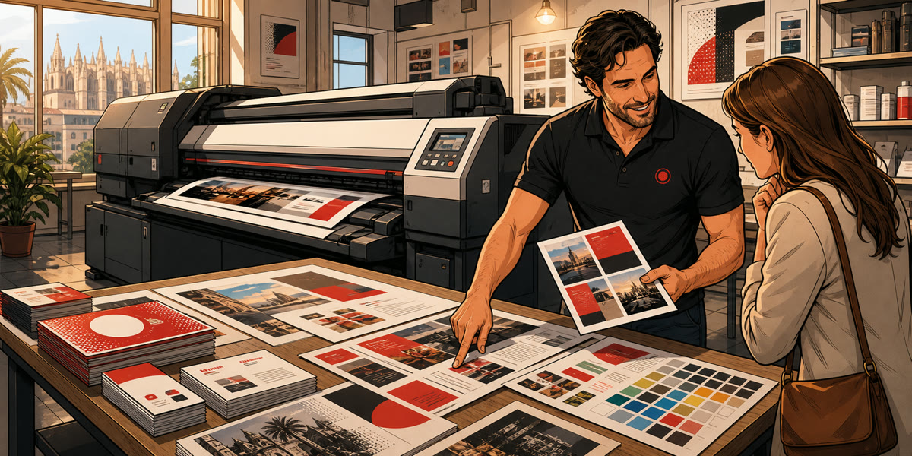

Flyers y folletos
Piezas para campañas, promociones, cartas, menús, eventos o comunicación comercial.

Impresión digital Palma
Impresión digital para piezas comerciales, papelería, cartelería, flyers, documentos y trabajos de tirada flexible con atención presencial.
Impresión comercial
La impresión digital permite producir materiales comerciales con rapidez, buena calidad y flexibilidad en cantidades, formatos y acabados.
Piezas para campañas, promociones, cartas, menús, eventos o comunicación comercial.
Impresión de documentos corporativos, presentaciones, fichas, dossiers y papelería de apoyo.
Carteles, soportes informativos y materiales visuales para negocios, oficinas o puntos de venta.
Qué podemos imprimir
La impresión digital es una solución práctica para empresas, comercios, profesionales y entidades que necesitan material impreso sin plantearlo como una compra online estándar. En Imprenta Disgraf revisamos el archivo, el uso de la pieza, la cantidad y el acabado antes de producir.
Este servicio puede cubrir flyers, folletos, cartas, menús, documentos, presentaciones, carteles, pequeñas campañas, papelería comercial o piezas de comunicación para eventos. La ventaja es que permite adaptar cantidades y formatos con más flexibilidad que otros sistemas, siempre valorando el resultado final que necesita el cliente.
Trabajamos con atención directa desde la imprenta en Calle Manacor 36. Puedes enviar tu archivo por email, llamarnos para resolver dudas o venir presencialmente para revisar papel, tamaño, cantidades y plazos.
Dudas frecuentes
La impresión digital suele ser más flexible para tiradas pequeñas o medianas y trabajos personalizados. Según cantidad y acabado se valora la opción más adecuada.
Sí. Lo revisamos antes de imprimir para comprobar tamaño, resolución, márgenes y sangrado si hace falta.
Podemos orientar, pero para cerrar precio necesitamos datos del trabajo y, si es posible, revisar el archivo.